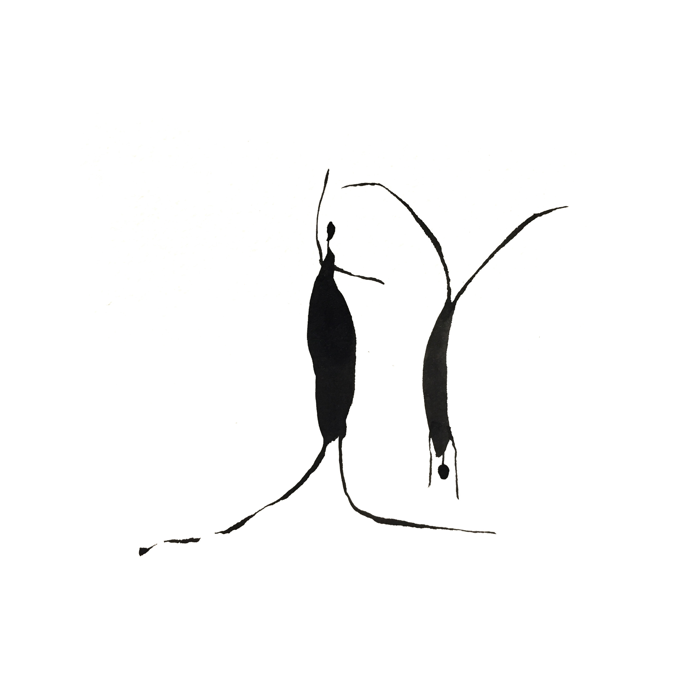
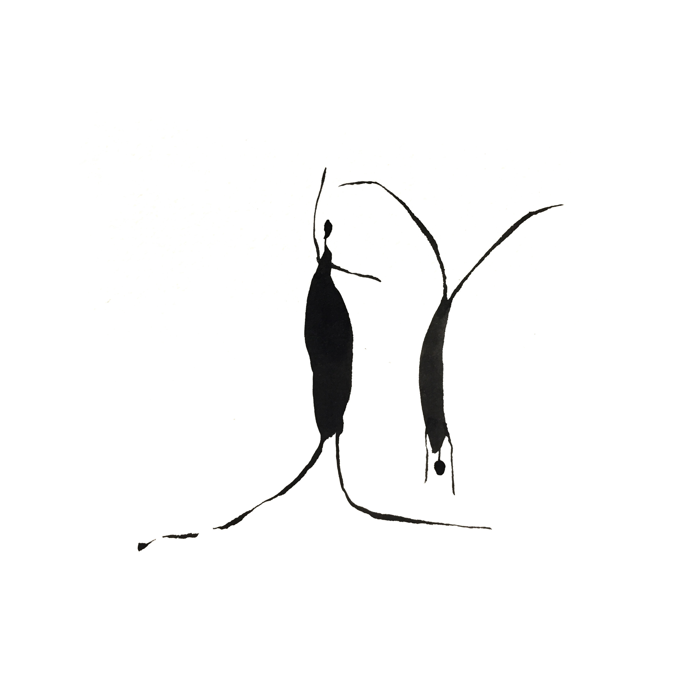

Ink Painting 2017
2017
Influenced by my study of traditional Chinese calligraphy from a young age, my recent practice depicts human interaction with ink and water. Growing up I always felt slightly confused during social interaction, and often felt unsure how to read social cues. This curiosity to explore vulnerability and isolation is heightened by my experience as an immigrant to the U.S. and as a woman of color. I visualize these personal and universal vulnerabilities in my ink paintings. The unpredictability of ink and water, and the influence of time, parallel the nuance of social interaction. I draw further inspiration from natural landscapes, personal memories, and observations of those around me. My architecture background has enriched my work, helping me to interpret solitude and intimacy by manipulating distance and space among the characters. The minimal figurative shapes and narrative titles I choose for each painting build an emotional structure, creating a conversation with the viewers that invites them to make their own stories.
Info
Time: 2017
Medium: Ink, Watercolor Paper
Category
Art
Series 1: Between The World and Me and You


Series 2: Loneliness and Awkwardness


 
